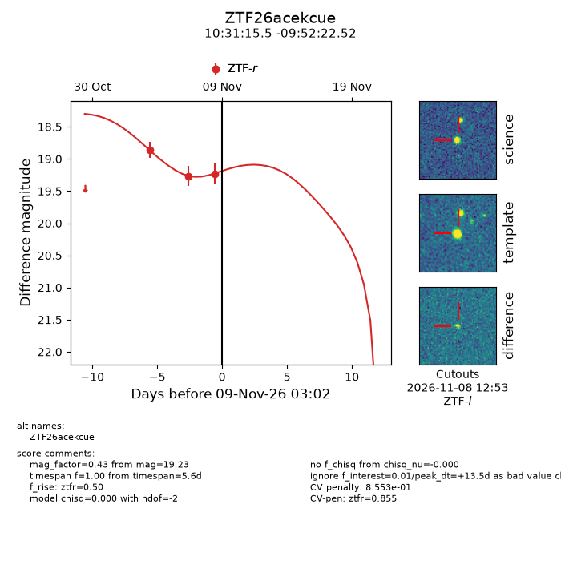
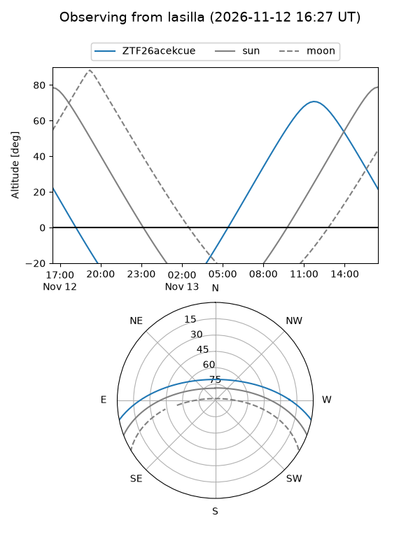
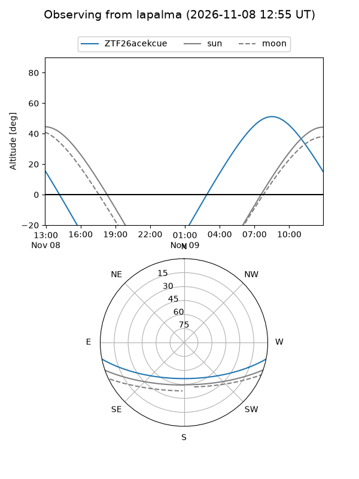
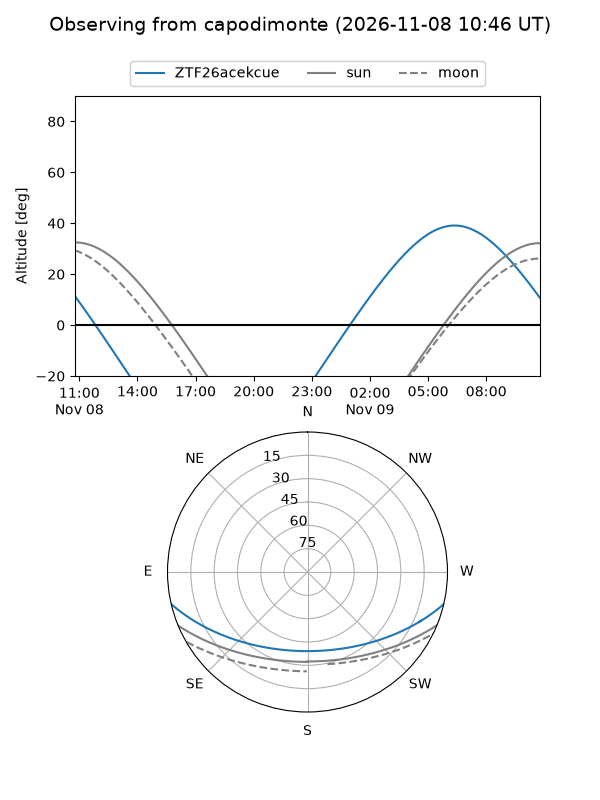
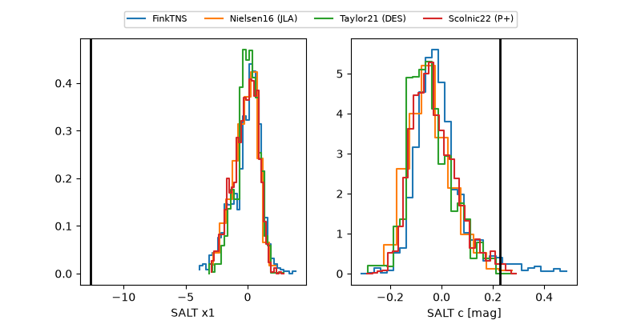

ZTF26acekcue
Target ZTF26acekcue at 2026-11-09 15:04
Aliases and brokers:
FINK-ZTF: ztf.fink-portal.org/ZTF26acekcue
Lasair-ZTF: lasair-ztf.lsst.ac.uk/objects/ZTF26acekcue
ALeRCE-ZTF: alerce.online/object/ZTF26acekcue
Direct TNS query: direct search
alt names
ZTF26acekcue (ztf,fink_ztf)
Coordinates:
equatorial (ra, dec) = 157.8147,-9.87292
equatorial (HMS+DMS) = 10:31:15.52,-09:52:22.52
galactic (l, b) = (255.5422,+39.76652)
Flags:
likely cv: !!
CV pen: 0.8552978038530266
peak dt: +14.0
Photometry:
last ztfr=19.23
3 ztfr detections
Lightcurve

Visibility



Additional plots
